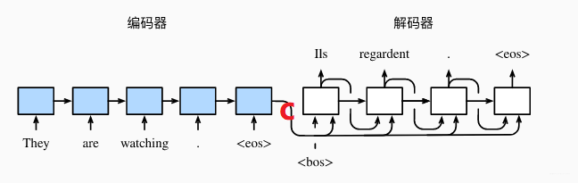
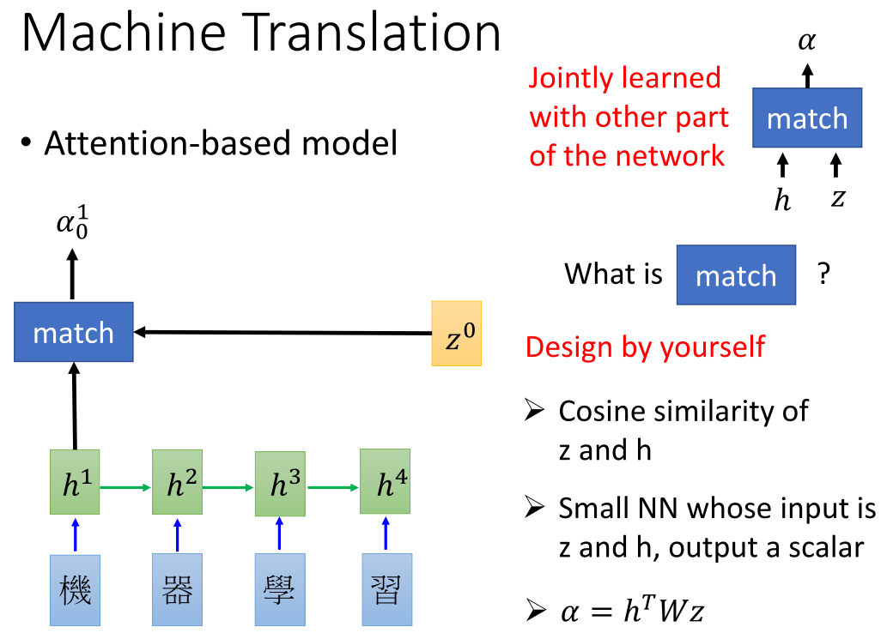
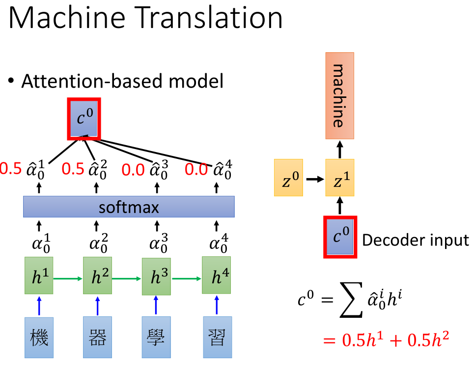

为什么会出现SeqToSeq?
RNN擅长处理序列数据，但是根据其结构特点，只能适用于输入和输出序列长度一致的情况。
SeqToSeq为了解决输入序列和输出序列不对等的问题而出现。
如果是比较复杂的任务， 不是让RNN预测词语， 而是让它做机器翻译， 我输入一个句子，让它输出一个句子了， 这时候RNN就表现的不是那么出色了， 为啥呢？ 因为这种情况， 我们的输入和输出都是不定长的序列，比如将一句中文翻译成英文，那么这句英文的长度有可能会比中文短，也有可能会比中文长， 输出就不确定了。 这时候单独用一个RNN网络就不是那么好了， 所以就想到了能不能用两个RNN网络把输入的处理和输出的处理分开进行呢， 就诞生了Seq2Seq模型。
Seq2Seq模型是输出的长度不确定时采用的模型， 现在应用场景也非常普遍， 在机器翻译， 人机对话等都会看到这种模型的身影。
SeqToSeq模型
其实就是由两个RNN网络组成， 左边那个叫做编码器， 负责的是将我们的输入进行编码， 右边的叫做解码器， 负责的是基于左边的编码进行生成我们想要的结果。 这样，就能把输入和输出分开处理， 解决了输入和输出都不定长的问题。

编码器的任务：
将句子输入到RNN中，计算出每个时间步的隐藏状态，将这些时间状态组合起来，即最终隐藏状态h。
h被称为上下文向量C，这个C综合了前面所有的输入信息。
解码器的任务：
在第一个时间步， 会接收一个初始化的y0, 这个表示句子的起始， 一般可以初始化为
Attention机制
当上下文向量很长时，一方面会导致解码器的计算任务过重，另一方面会影响当前输出y。
在机器翻译的时候， 如果序列很长， 我翻译第一个单词相当于考虑了所有的输入信息， 这显然不符合我们翻译的习惯（我们人翻译一句话的时候也不是考虑所有的句子再进行翻译吧）， 我们做翻译的时候，通常是先将长的句子分段， 翻译的时候， 只聚焦于对某一小段进行翻译， 这样会比较准确。 比如翻译“I love China, because it 巴拉巴拉”， 那么我翻译第一个词的时候， 是不是更关注于” love China”, 然后翻译出“我”， 而不需要关注后面那一长串， 同理翻译love的时候， 更关注I和China多一些？
Attention机制和SeqToSeq并不冲突，可以融合到一起：
加入match机制，使每个时间段的输入序列权重不同，这样解码器每个时间段输入的上下文向量C也不同。根据解码得出的结果z，再反作用于match，改变match机制中的参数，即每个输入序列的权重。
match的形式可以是多种：

工作原理：

工作细节（6个步骤）：
输入通过编码器的RNN得到隐藏状态信息、 给每一个隐藏状态信息打分、 把分数进行softmax获得每个隐藏状态的权重、 把权重与隐藏状态相乘、 把前面的相乘结果相加得到上下文向量C、把C放入到解码器就可以进行翻译。
参考文章：